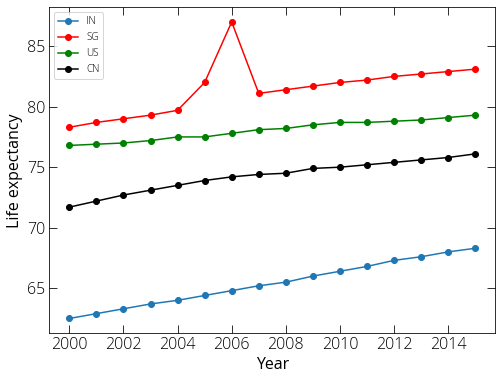
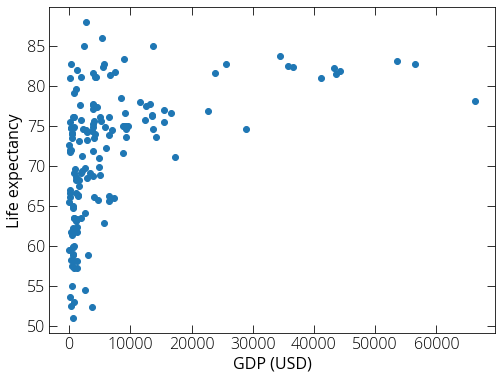
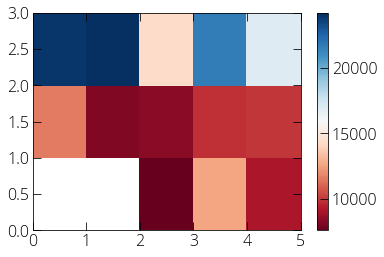

Basic data exploration using Pandas
We will explore life expectancy data from WHO record. You can find such datasets from Kaggle and other databases online. You can also find a copy of the CSV file that we will be using here.
import pandas as pd
# Read the data from csv file
data = pd.read_csv("~/Desktop/Life-Expectancy-Data.csv")
# Print the head of the data to get an overview
data.head()
| Country | Year | Status | Life expectancy | Adult Mortality | infant deaths | Alcohol | percentage expenditure | Hepatitis B | Measles | ... | Polio | Total expenditure | Diphtheria | HIV/AIDS | GDP | Population | thinness 1-19 years | thinness 5-9 years | Income composition of resources | Schooling | |
|---|---|---|---|---|---|---|---|---|---|---|---|---|---|---|---|---|---|---|---|---|---|
| 0 | Afghanistan | 2015 | Developing | 65.0 | 263.0 | 62 | 0.01 | 71.279624 | 65.0 | 1154 | ... | 6.0 | 8.16 | 65.0 | 0.1 | 584.259210 | 33736494.0 | 17.2 | 17.3 | 0.479 | 10.1 |
| 1 | Afghanistan | 2014 | Developing | 59.9 | 271.0 | 64 | 0.01 | 73.523582 | 62.0 | 492 | ... | 58.0 | 8.18 | 62.0 | 0.1 | 612.696514 | 327582.0 | 17.5 | 17.5 | 0.476 | 10.0 |
| 2 | Afghanistan | 2013 | Developing | 59.9 | 268.0 | 66 | 0.01 | 73.219243 | 64.0 | 430 | ... | 62.0 | 8.13 | 64.0 | 0.1 | 631.744976 | 31731688.0 | 17.7 | 17.7 | 0.470 | 9.9 |
| 3 | Afghanistan | 2012 | Developing | 59.5 | 272.0 | 69 | 0.01 | 78.184215 | 67.0 | 2787 | ... | 67.0 | 8.52 | 67.0 | 0.1 | 669.959000 | 3696958.0 | 17.9 | 18.0 | 0.463 | 9.8 |
| 4 | Afghanistan | 2011 | Developing | 59.2 | 275.0 | 71 | 0.01 | 7.097109 | 68.0 | 3013 | ... | 68.0 | 7.87 | 68.0 | 0.1 | 63.537231 | 2978599.0 | 18.2 | 18.2 | 0.454 | 9.5 |
5 rows × 22 columns
# Let's see how many year data are there
data['Year'].unique()
array([2015, 2014, 2013, 2012, 2011, 2010, 2009, 2008, 2007, 2006, 2005,
2004, 2003, 2002, 2001, 2000])
data.columns
Index(['Country', 'Year', 'Status', 'Life expectancy ', 'Adult Mortality',
'infant deaths', 'Alcohol', 'percentage expenditure', 'Hepatitis B',
'Measles ', ' BMI ', 'under-five deaths ', 'Polio', 'Total expenditure',
'Diphtheria ', ' HIV/AIDS', 'GDP', 'Population',
' thinness 1-19 years', ' thinness 5-9 years',
'Income composition of resources', 'Schooling'],
dtype='object')
# Let us first select a subset of data (say we are interested in life expectancy)
life_expectancy = data[['Country', 'Year', 'Life expectancy ']]
# Let's select few countries and plot the life expectancy over the years
life_expectancy_in = life_expectancy.loc[life_expectancy['Country'] == 'India']
life_expectancy_sg = life_expectancy.loc[life_expectancy['Country'] == 'Singapore']
life_expectancy_us = life_expectancy.loc[life_expectancy['Country'] == 'United States of America']
life_expectancy_cn = life_expectancy.loc[life_expectancy['Country'] == 'China']
# Let's plot using matplotlib
import matplotlib.pyplot as plt
%matplotlib inline
plt.rcParams["figure.figsize"] = (8, 6)
plt.plot(life_expectancy_in['Year'], life_expectancy_in['Life expectancy '], \
label= 'IN', marker= 'o')
plt.plot(life_expectancy_sg['Year'], life_expectancy_sg['Life expectancy '], \
label= 'SG', marker= 'o', color='r')
plt.plot(life_expectancy_us['Year'], life_expectancy_us['Life expectancy '], \
label= 'US', marker= 'o', color='g')
plt.plot(life_expectancy_cn['Year'], life_expectancy_cn['Life expectancy '], \
label= 'CN', marker= 'o', color='k')
plt.xlabel('Year')
plt.ylabel('Life expectancy')
plt.legend()
plt.show()

gdp_life_expectancy = data[['Country', 'Year', 'Life expectancy ', 'GDP']]
gdp_life_expectancy_2015 = gdp_life_expectancy.loc[gdp_life_expectancy['Year']==2015]
plt.scatter(gdp_life_expectancy_2015['GDP'], \
gdp_life_expectancy_2015['Life expectancy '])
plt.xlabel('GDP (USD)')
plt.ylabel('Life expectancy')
plt.show()

gdp_life_expectancy_2015.loc[gdp_life_expectancy_2015['Life expectancy '] > 85]
| Country | Year | Life expectancy | GDP | |
|---|---|---|---|---|
| 737 | Denmark | 2015 | 86.0 | 5314.64416 |
| 2345 | Slovenia | 2015 | 88.0 | 2729.86383 |
We can read data from url as well. By default, Pandas csv import assumes our data file has a header. If we do not have a header, we need to explicitly set the header to none.
import pandas as pd
url = 'http://archive.ics.uci.edu/ml/machine-learning-databases/autos/imports-85.data'
df = pd.read_csv(url, header = None)
We can have a look at the imported data by following methods:
df.head() # first 5 rows of the dataframe
df.head(10) # first 10 rows
df.tail() # last 5 rows
Without the column headers, it is difficult to identity the columns. For our car data the headers can be found on a separate file. You can download the file and have a look into it to figure out what each column represents. Here is another way to do the same:
import urllib
url = "http://archive.ics.uci.edu/ml/machine-learning-databases/autos/imports-85.names"
headers = {'User-Agent': 'Mozilla/5.0'}
req = urllib.request.Request(url = url, headers = headers)
data = urllib.request.urlopen(req).read().decode()
data.split("\n") # this is not recommended for very big dataset
data.split("\n")[:20] # first 20 items of the list
data.split("\n")[-20:] # last 20 items of the list
From above methods, we can find out the headers for our data set, and assign to our dataframe:
headers = ["symboling", "normalized-losses", "make", "fuel-type", "aspiration",\
"num-of-doors", "body-style", "drive-wheels", "engine-location",\
"wheel-base", "length", "width", "height", "curb-weight", "engine-type",\
"num-of-cylinders", "engine-size", "fuel-system", "bore", "stroke",\
"compression-ratio", "horsepower", "peak-rpm", "city-mpg", "highway-mpg",\
"price"]
df.columns = headers
df.head()
Renaming a column:
df["city-mpg"] = 235/df["city-mpg"]
df.rename(columns={"city_mpg" : "city-L/100km"}, inplace=True)
We can save our data with the headers:
df.to_csv("/Users/Pranab/Desktop/car_data.csv", index=None)
There are few other common formats:
| Format | Read | Save |
|---|---|---|
| csv | pd.read_csv() | df.to_csv() |
| json | pd.read_json() | df.to_json() |
| excel | pd.read_excel() | df.to_excel() |
| sql | pd.read_sql() | df.to_sql() |
Data types in Pandas:
df.dtypes
The default pandas data import may not assign the correct data type. In that case we need to convert correct data type manually. But, before we do that we may need to do some cleanup. We will see that many of entries in our data is missing or not available. For example, many entries in our car data is "?". Many of the python functions and methods will result in error if we proceed with such entries. In the first attempt, we many replace the "?" by "NaN".
df.replace("?", "NaN", inplace=True)
df["price"] = df["price"].astype("float")
df.dtypes
And we will see that we have correctly applied float type to our price column. Now let's have a overview of our dataset:
df.describe()
If we want to see some basis statistics on Object columns as well:
df.describe(include="all")
Following method can also be helpful:
df.info()
Strategy for missing data:
- Drop the row if there is a missing value.
- Replace/insert values for missing value. Inserting average of the whole dataset. If the datatype is categorical, we can replace by the most occurring data entry.
Drop missing values using dropna method:
df.dropna(subset=["price"], axis=0, inplace=True)
We can replace the missing values if appropriate:
import numpy as np
df["horsepower"] = df["horsepower"].astype("float")
mean = df["horsepower"].mean()
df["horsepower"].replace(np.nan, mean, inplace=True)
Data normalization:
When we work with different kind of data say car price and horse power, the prices are ranged from 5,000 - 50,000 USD while horse power maybe 20 to 200. If we use these two features to build a model, the price will influence the model more because of its higher values. In such cases we may need to normalize both data in similar ranges. Say we normalize both the columns in the range [0, 1].
# simple scaling
df["price"] = df["price"]/df["price"].max()
# min-max
df["price"] = (df["price"] - df["price"].mean())/(df["price"].max() - df["price"].min())
# z-score
df["price"] = (df["price"] - df["price"].mean())/df["price"].std()
Data binning:
Say we want to categorize our price in to low, medium, and high price cars:
bins = np.linspace(df["price"].min(), df["price"].max(), 4)
categories = ["low", "medium", "high"]
df["price-binned"] = pd.cut(df["price"], bins, labels=categories, include_lowest=True)
More methods for data exploration
value_counts():
drive_wheels_counts = df["drive-wheels"].value_counts()
drive_wheels_counts
Groupby():
df_copy = df[["drive-wheels", "body-style", "price"]]
df_grp = df_copy.groupby(["drive-wheels"], as_index=False).mean()
df_grp
We can groupby() using multiple variables:
df_grp = df_copy.groupby(["drive-wheels", "body-style"], as_index=False).mean()
df_grp
Pivot() table:
df_pivot = df_grp.pivot(index="drive-wheels", columns="body-style")
df_pivot
Heatmap:
import matplotlib.pyplot as plt
%matplotlib inline
plt.pcolor(df_pivot, cmap="RdBu")
plt.colorbar()
plt.show()

Analysis of Variance (ANOVA):
df_copy = df[["make", "price"]]
df_grp = df_copy.groupby(["make"])
from scipy import stats
anova_honda_subaru = stats.f_oneway(df_grp.get_group("honda")["price"], \
df_grp.get_group("subaru")["price"])
print(anova_honda_subaru)
Output:
F_onewayResult(statistic=0.19744030127462606, pvalue=0.6609478240622193)
Similarly:
anova_honda_jaguar = stats.f_oneway(df_grp.get_group("honda")["price"], \
df_grp.get_group("jaguar")["price"])
print(anova_honda_jaguar)
Output:
F_onewayResult(statistic=400.925870564337, pvalue=1.0586193512077862e-11)
Pearson Correlation coefficient:
p_coef, p_val = stats.pearsonr(df["horsepower"], df["price"])
print (p_coef, p_val)
Output:
0.8096811975632288 6.058444649710002e-48
- Pearson correlation coefficient +1 : positive correlation
- Pearson correlation coefficient -1 : negative correlation
- Pearson correlation coefficient 0 : no correlation
- Pvalue < 0.001 : strong certainty
- Pvalue > 0.1 : no certainty
We can create correlation heatmaps between various parameters.